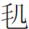
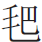

君子愛人以道，不能减牽戀之情；小人圖謀以霸，何可逃侮慢之辱？幻境幻情，又造出一番曉妝新樣。
君子愛人以道，不能减牽戀之情；小人圖謀以霸，何可逃侮慢之辱？幻境幻情，又造出一番曉妝新樣。
話說秦業父子專候賈家的人來送上學擇日之信。原來寶玉急於要和秦鍾相遇， 妙！不知是怎樣相遇。却顧不得別的，遂擇了後日一定上學。「後日一早，請秦相公先到我這裡，會齊了，一同前去。」——打發人送了信。
妙！不知是怎樣相遇。却顧不得別的，遂擇了後日一定上學。「後日一早，請秦相公先到我這裡，會齊了，一同前去。」——打發人送了信。
至是日一早，寶玉起來時，襲人早已把書筆文物包好，收拾得停停妥妥，坐在床沿上發悶。神理可思，忽又寫小兒學堂中一篇文字，亦別書中之未有。 
 此等神理，方是此書的正文。見寶玉醒來，只得伏侍他梳洗。寶玉見他悶悶的，因笑問道：「好姐姐，開口斷不可少此三字。你怎麽又不自在了？難道怪我上學去丟的你們冷清了不成？」襲人笑道：「這是那裡話。讀書是極好的事，不然就潦倒一輩子，終久怎麽樣呢。但只一件，只是唸書的時節想著書，襲人方纔的悶悶，此時的正論，請教諸公，設身處地，亦必是如此方是，真是曲盡情理，一字也不可少者。不唸的時節想著家些。別和他們一處玩鬧，長亭之囑，不過如是。碰見老爺不是玩的。雖說是奮志要强，那功課寧可少些，一則貪多嚼不爛，二則身子也要保重。這就是我的意思，你可要體諒。」書正語細囑一番。蓋襲卿心中，明知寶玉他並非真心奮志之人，襲人自別有說不出來之話。襲人說一句，寶玉答應一句。襲人又道：「大毛衣服我也包好了，交出給小子們去了。學裡冷，好歹想著添換，比不得家裡有人照顧。脚爐手爐的炭也交出去了，你可逼著他們添。那一起懶賊，你不說，他們樂得不動，白凍壞了你。」寶玉道：「你放心，出外頭我自己都會調停的。無人體貼，自己扶持。你們也別悶死在這屋裡，長和林妹妹一處去頑笑纔好。」說著，俱已穿戴齊備，襲人催他去見賈母、賈政、王夫人等。寶玉且又囑咐了晴雯麝月等幾句，這纔是寶玉的本來面目。方出來見賈母。賈母也未免有幾句囑咐的話。然後去見王夫人，又出來書房中見賈政。
此等神理，方是此書的正文。見寶玉醒來，只得伏侍他梳洗。寶玉見他悶悶的，因笑問道：「好姐姐，開口斷不可少此三字。你怎麽又不自在了？難道怪我上學去丟的你們冷清了不成？」襲人笑道：「這是那裡話。讀書是極好的事，不然就潦倒一輩子，終久怎麽樣呢。但只一件，只是唸書的時節想著書，襲人方纔的悶悶，此時的正論，請教諸公，設身處地，亦必是如此方是，真是曲盡情理，一字也不可少者。不唸的時節想著家些。別和他們一處玩鬧，長亭之囑，不過如是。碰見老爺不是玩的。雖說是奮志要强，那功課寧可少些，一則貪多嚼不爛，二則身子也要保重。這就是我的意思，你可要體諒。」書正語細囑一番。蓋襲卿心中，明知寶玉他並非真心奮志之人，襲人自別有說不出來之話。襲人說一句，寶玉答應一句。襲人又道：「大毛衣服我也包好了，交出給小子們去了。學裡冷，好歹想著添換，比不得家裡有人照顧。脚爐手爐的炭也交出去了，你可逼著他們添。那一起懶賊，你不說，他們樂得不動，白凍壞了你。」寶玉道：「你放心，出外頭我自己都會調停的。無人體貼，自己扶持。你們也別悶死在這屋裡，長和林妹妹一處去頑笑纔好。」說著，俱已穿戴齊備，襲人催他去見賈母、賈政、王夫人等。寶玉且又囑咐了晴雯麝月等幾句，這纔是寶玉的本來面目。方出來見賈母。賈母也未免有幾句囑咐的話。然後去見王夫人，又出來書房中見賈政。
偏生這日賈政回家早些，若俗筆則又云不在家矣。試思若再不見，則成何文字哉？所謂不敢作安逸苟且塞責文字。正在書房中與相公清客們閒談。忽見寶玉進來請安，回說上學裡去，賈政冷笑道：「你如果再提『上學』兩個字，連我也羞死了。這一句纔補出已往許多文字。是嚴父之聲。依我的話，你竟頑你的去是正理。仔細站髒了我這地，靠髒了我的門！」畫出寶玉的俯首挨壁之形象來。衆清客相公們都早起身笑道：「老世翁何必又如此。今日世兄一去，三二年就可顯身成名的了，斷不似往年仍作小兒之態了。天也將飯時，世兄竟快請罷。」說著便有兩個年老的携了寶玉出去。
賈政因問：「跟寶玉的是誰？」只聽外面答應了兩聲，早進來三四個大漢，打千兒請安。賈政看時，認得是寶玉的奶母之子，名喚李貴。因向他道：「你們成日家跟他上學，他到底唸了些什麽書！倒唸了些流言混話在肚子裡，學了些精緻的淘氣。等我閒一閒，先揭了你的皮，再和那不長進的算賬！」此等話似覺無味無理，然而作父母的，到無可如何處，每多用此等法術，所謂百計經營、心力俱瘁者。嚇的李貴忙雙膝跪下，摘了帽子，碰頭有聲，連連答應「是」，又回說：「哥兒已經唸到第三本《詩經》，什麽『呦呦鹿鳴，荷葉浮萍』，小的不敢撒謊。」說的滿座哄然大笑起來。賈政也撑不住笑了。因說道：「那怕再唸三十本《詩經》，也都是掩耳偷鈴，哄人而已。你去請學裡太爺的安，就說我說了：什麽《詩經》、古文，一概不用虛應故事，只是先把《四書》一氣講明背熟，是最要緊的。」李貴忙答應「是」，見賈政無話，方退出去。
此時寶玉獨站在院外屏聲靜候，待他們出來，便忙忙的走了。李貴等一面彈衣服，一面說道：「哥兒可聽見了不曾？先要揭我們的皮呢！人家的奴才跟主子賺些好體面，我們這等奴才白陪挨打受駡的。從此後也可憐見些纔好。」可以謂能達主人之意，不辱君命。寶玉笑道：「好哥哥，你別委曲，我明兒請你。」李貴道：「小祖宗，誰敢望你請？只求聽一句半句話就有了。」說著，又至賈母這邊，秦鍾已早來候著了，賈母正和他說話兒呢。此處便寫賈母愛秦鍾一如其孫，至後文方不突然。於是二人見過，辭了賈母。寶玉忽想起未辭黛玉，妙極！何頓挫之至！余已忘却，至此心神一暢，一絲不漏。因又忙至黛玉房中來作辭。彼時黛玉纔在窗下對鏡理妝，聽寶玉說上學去，因笑道：「好！這一去，可定是要『蟾宮折桂』去了。此寫黛玉，差强人意。《西厢》雙文，能不抱愧！我不能送你了。」寶玉道：「好妹妹，等我下學再吃晚飯。和胭脂膏子也等我來再製。」 嘮叨了半日，方撤身去了。如此總一句，更妙！黛玉忙又叫住問道：「你怎麽不去辭辭你寶姐姐來？」必有是語，方是黛玉。此又係黛玉平生之病。寶玉笑而不答。黛玉之問，寶玉之笑，兩心一照，何等神工鬼斧文章。一逕同秦鍾上學去了。
原來這賈家義學離此也不甚遠，不過一里之遙，原係當日始祖所立，恐族中子弟有貧窮不能請師者，即入此中肄業。凡族中有官爵之人，皆供給銀両，按俸之多寡幫助，為學中之費。特共舉年高有德之人為塾掌，專為訓課子弟。創立者之用心，可謂至矣。如今寶秦二人來了，一一的都互相拜見過，讀起書來。自此以後，他二人同來同往，同起同坐，愈加親密。又兼賈母愛惜，也時常的留下秦鍾，住上三天五日，與自己的重孫一般疼愛。因見秦鍾不甚寬裕，更又助他些衣履等物。不上一月之工，秦鍾在榮府便熟了。交待的清。寶玉終是不安分之人，寫寶玉總作如此筆。竟一味的隨心所欲，因此又發了癖性，又特向秦鍾悄說道：「咱們两個人一樣的年紀，况又是同窗，以後不必論叔侄，只論弟兄朋友就是了。」悄說之時何時？舍尊就卑何心？隨心所欲何癖？相親愛密何情？先是秦鍾不肯，當不得寶玉不依，只叫他「兄弟」，或叫他的表字「鯨卿」，秦鍾也只得混著亂叫起來。
原來這學中雖都是本族人丁與些親戚家的子弟，俗語說的好，「一龍生九種，九種各別。」未免人多了，就有龍蛇混雜，下流人物在內。伏一筆。自寶、秦二人來了，都生的花朵兒一般的模樣，又見秦鍾靦腆溫柔，未語面先紅，怯怯羞羞，有女兒之風；寶玉又是天生成慣能做小服低，賠身下氣，性情體貼，話語綿纏，凡四語十六字，上用「天生成」三字，真正寫盡古今情種人也。因此二人更加親厚，也怨不得那起同窗人起了疑，背地裡你言我語，詬誶謠諑，佈滿書房內外。伏下文「阿呆爭風」一回。
原來薛蟠自來王夫人處住後，便知有一家學，學中廣有青年子弟，不免偶動了龍陽之興，因此也假來上學讀書，不過是三日打魚，兩日曬網，白送些束修禮物與賈代儒，却不曾有一些兒進益，只圖結交些契弟。誰想這學內就有好幾個小學生，圖了薛蟠的銀錢吃穿，被他哄上手的，也不消多記。先虛寫幾個淫浪蠢物，以陪下文，方不孤不板。  伏下金榮。更有兩個多情的小學生，此處用「多情」二字方妙。亦不知是那一房的親眷，亦未考真名姓，一併隱其姓名，所謂「具菩提之心，秉刀斧之筆」。只因生得嫵媚風流，滿學中都送了他兩個外號，一號「香憐」，一號「玉愛」。誰都有竊慕之意，將不利於孺子之心，詼諧得妙，又似李笠翁書中之趣語。只是都懼薛蟠的威勢，不敢來沾惹。如今寶、秦二人一來了，見了他兩個，也不免繾綣羨愛，亦因知係薛蟠相知，故未敢輕舉妄動。香、玉二人心中，也一般的留情與寶、秦。因此四人心中雖有情意，只未發跡。每日一入學中，四處各坐，却八目勾留，或設言託意，或咏桑寓柳，遙以心照，却外面自為避人眼目。小兒之態活現，掩耳偷鈴者亦然，世人亦復不少。不意偏又有幾個滑賊看出形景來，都背後擠眉弄眼，或咳嗽揚聲，又畫出歷來學中一群頑皮來。 才子輩偏無不解之事。這也非此一日。
伏下金榮。更有兩個多情的小學生，此處用「多情」二字方妙。亦不知是那一房的親眷，亦未考真名姓，一併隱其姓名，所謂「具菩提之心，秉刀斧之筆」。只因生得嫵媚風流，滿學中都送了他兩個外號，一號「香憐」，一號「玉愛」。誰都有竊慕之意，將不利於孺子之心，詼諧得妙，又似李笠翁書中之趣語。只是都懼薛蟠的威勢，不敢來沾惹。如今寶、秦二人一來了，見了他兩個，也不免繾綣羨愛，亦因知係薛蟠相知，故未敢輕舉妄動。香、玉二人心中，也一般的留情與寶、秦。因此四人心中雖有情意，只未發跡。每日一入學中，四處各坐，却八目勾留，或設言託意，或咏桑寓柳，遙以心照，却外面自為避人眼目。小兒之態活現，掩耳偷鈴者亦然，世人亦復不少。不意偏又有幾個滑賊看出形景來，都背後擠眉弄眼，或咳嗽揚聲，又畫出歷來學中一群頑皮來。 才子輩偏無不解之事。這也非此一日。
可巧這日代儒有事，早已回家去了，又留下一句七言對聯，命學生對了，明日再來上書；將學中之事，又命賈瑞又出一賈瑞。暫且管理。妙在薛蟠如今不大來學中應卯了，因此秦鍾趁此和香憐擠眉弄眼，遞暗號兒，二人假裝出小恭，走至後院說體己話。秦鍾先問他：「家裡的大人可管你交朋友不管？」妙問，真真活跳出兩個小兒來。一語未了，只聽背後咳嗽了一聲。太急了些，該再聽他二人如何結局，正所謂小兒之態也，酷肖之極。二人唬的忙回頭看時，原來是窗友名金榮妙名，蓋云有金自榮，廉耻何益哉？者。香憐本有些性急，羞怒相激，問他道：「你咳嗽什麽？難道不許我兩個說話不成？」金榮笑道：「許你們說話，難道不許我咳嗽不成？我只問你們：有話不明說，許你們這樣鬼鬼祟祟的幹什麽故事？我可也拿住了，還賴什麽！先得讓我抽個頭兒，咱們一聲兒不言語，不然大家就奮起來。」秦、香二人急得飛紅的臉，便問道：「你拿住什麽了？」金榮笑道：「我現拿住了是真的。」說著，又拍著手笑嚷道：「貼的好燒餅！你們都不買一個吃去？」秦鍾、香憐二人又氣又急，忙進來向賈瑞前告金榮，說金榮無故欺負他兩個。
原來這賈瑞最是個圖便宜沒行止的人，每在學中以公報私，勒索子弟們請他；學中亦自有此輩，可為痛哭。後又附助著薛蟠，圖些銀錢酒肉，一任薛蟠橫行霸道，他不但不去管約，反助紂為虐討好兒。偏那薛蟠本是浮萍心性，今日愛東，明日愛西，近來又有了新朋友，把香、玉二人丟開一邊。就連金榮亦是當日的好朋友，自有了香、玉二人，便棄了金榮。近日連香、玉亦已見棄。故賈瑞也無了提携幫襯之人，不說薛蟠得新棄舊，只怨香、玉二人不在薛蟠前提携幫補他，無耻小人，真有此心。因此賈瑞金榮等一干人，也正在醋妒他兩個。今兒見秦、香二人來告金榮，賈瑞心中便不自在起來，不好呵叱秦鍾，却拿著香憐作法，反說他多事，著實搶白了幾句。香憐反討了沒趣，連秦鍾也訕訕的各歸坐位去了。金榮越發得了意，搖頭咂嘴的，口內還說許多閒話，玉愛偏又聽了不忿，兩個人隔座咕咕唧唧的角起口來。金榮只一口咬定說：「方纔明明的撞見他兩個在後院子裡親嘴摸屁股，兩個商議定了，一對一肏，撅草棍兒抽長短，「怎麽長短」四字，何等韻雅，何等渾含！俚語得文人提來，便覺有金玉為聲之象。〔一〕誰長誰先幹。」金榮只顧得意亂說，却不防還有別人。誰知早又觸怒了一個。你道這個是誰？
原來這一個名喚賈薔，新而艶，得空便入。亦係寧府中之正派玄孫，父母早亡，從小兒跟賈珍過活，如今長了十六歲，比賈蓉生的還風流俊俏。他兄弟二人最相親厚，常相共處。寧府人多口雜，那些不得志的奴僕們，專能造言誹謗主人，因此不知又有了什麽小人詬誶謠諑之辭。賈珍想亦風聞得些口聲不大好，自己也要避些嫌疑，如今竟分與房舍，命賈薔搬出寧府，自去立門戶過活去了。此等嫌疑不敢認真搜查，悄為分計，皆以含而不露為文，真是靈活至極之筆。這賈薔外相既美，亦不免招謗，難怪小人之口。內性又聰明，雖然應名來上學，亦不過虛掩眼目而已。仍是鬬鶏走狗，賞花玩柳。總恃上有賈珍溺愛，貶賈珍最重。下有賈蓉匡助，貶賈蓉次之。因此族中人誰敢來觸逆於他。他既和賈蓉最好，今見有人欺負秦鍾，如何肯依？如今自己要挺身出來報不平，心中却忖度一番，這一忖度，方是聰明人之心機，寫得最好看，最細緻。想道：「金榮賈瑞一干人，都是薛大叔的相知，向日我又與薛大叔相好，倘或我一出頭，他們告訴了老薛，先曰「薛大叔」，次曰「老薛」，寫盡驕侈紈絝。我們豈不傷和氣？待要不管，如此謠言，說的大家沒趣。如今何不用計制服，又止息了口聲，又不傷了臉面。」想畢，也裝出小恭，走至外面，悄悄的把跟寶玉的書童名喚茗煙又出一茗煙。者喚到身邊，如此這般調撥他幾句。如此便好，不必細述。
這茗煙乃是寶玉第一個得用的，且又年輕不諳世事，如今聽賈薔說金榮如此欺負秦鍾，連他爺寶玉都干連在內，不給他個利害，下次越發狂縱難制了。這茗煙無故就要欺壓人的，如今得了這個信，又有賈薔助著，便一頭進來找金榮，也不叫金相公了，只說：「姓金的，你是什麽東西！」賈薔遂跺一跺靴子，故意整整衣服，看看日影兒說：「是時候了。」遂先向賈瑞說有事要早一步。賈瑞不敢强他，只得隨他去了。這裡茗煙先一把揪住金榮，豪奴輩，雖係主人親故亦隨便欺慢，即有一二不服氣者，而豪家多是偏護家人。理之所無，而事之盡有，不知是何心思，實非凡常可能測略。問道：「我們肏屁股不肏屁股，管你


相干？橫竪沒肏你爹去罷了！你是好小子，出來動一動你茗大爺！」嚇的滿屋中子弟都怔怔的痴望。賈瑞忙吆喝：「茗煙不得撒野！」金榮氣黃了臉，說：「反了！奴才小子都敢如此，我和你主子說。」便奪手要去抓打寶玉秦鍾。好看之極！尚未去時，從腦後「颼」的一聲，早見一方硯瓦飛來，好看好笑之極！並不知係何人打來的，幸未打著，却又打了旁人的座上，這座上乃是賈蘭、賈菌。
賈菌亦係榮府近派的重孫，先寫一寧派，又寫一榮派，互相錯綜得妙。其母亦少寡，獨守著賈菌，這賈菌與賈蘭最好，所以二人同桌而坐。誰知賈菌年紀雖小，志氣最大，極是淘氣不怕人的。要知沒志氣小兒，必不會淘氣。他在座上冷眼看見金榮的朋友暗助金榮，飛硯來打茗煙，偏沒打著茗煙，便落在他座上，正打在面前，將一個磁硯水壺打了個粉碎，濺了一書黑水。這等忙，有此閒處用筆。賈菌如何依得，便駡：「好囚攮的們，這不都動了手了麽！」好聽煞。駡著，也抓起硯磚來要飛。先瓦硯，次磚硯，轉換得妙極。賈蘭是個省事的，忙按住硯，極口勸道：「好兄弟，不與咱們相干。」是賈蘭口氣。賈菌如何忍得住，便兩手抱起書匣子來，照那邊掄了去。先「飛」後「掄」，用字得神，好看之極！終是身小力薄，却掄不到那裡，剛到寶玉秦鍾桌案上就落了下來，只聽「嘩啷啷」一聲，砸在桌上，書本紙片等至於筆硯之物撒了一桌，又把寶玉的一碗茶也砸得碗碎茶流。好看之極！不打著別個，偏打著二人，亦想不到文章也。此書此等筆法，與後文踢著襲人、誤打平兒，是一樣章法。賈菌便跳出來，要揪打那一個飛硯的。金榮此時隨手抓了一根毛竹大板在手，地狹人多，那裡經得舞動長板。茗煙早吃了一下，亂嚷：「你們還不來動手！」寶玉還有三個小厮：一名鋤藥，一名掃紅，一名墨雨。這三個豈有不淘氣的，一齊亂嚷：「小婦養的！動了兵器了！」好聽之極，好看之極！墨雨遂掇起一根門閂，掃紅鋤藥手中都是馬鞭子，蜂擁而上。賈瑞急攔一回這個，勸一回那個，誰聽他的話，肆行大鬧。衆頑童也有趁勢幫著打太平拳助樂的，也有膽小藏在一邊的，也有直立在桌上拍著手兒亂笑、喝著聲兒叫打的，登時間鼎沸起來。燕青打擂臺，也不過如此。
外邊李貴等幾個大僕人聽見裡邊作反起來，忙都進來一齊喝住。問是何原故。衆聲不一，這一個如此說，那一個又如彼說。妙！如聞其聲。李貴且喝駡了茗煙四個一頓，處治的好。攆了出去。秦鍾的頭早撞在金榮的板上，打去一層油皮，寶玉正拿褂襟子替他揉呢，見喝住了衆人，便命：「李貴，收書！拉馬來，我回去回太爺去！我們被人欺負了，不敢說別的，守禮來告訴瑞大爺，瑞大爺反倒派我們不是，聽人家駡我們，還調唆他們打我們。茗煙見人欺負我，他豈有不為我的；他們反打夥兒打了茗煙，連秦鍾的頭也打破了，還在這裡唸什麽書！不如散了罷。」李貴勸道：「哥兒不要性急。太爺既有事回家去了，這會子為這點子事去聒噪他老人家，倒顯的咱們沒理。依我的主意，那裡的事那裡了結好，何必去驚動他老人家。這都是瑞大爺的不是，太爺不在這裡，你老人家就是這學裡的頭腦了，衆人看你行事。勸的心思，有個太爺得知，未必然之。故巧為輾轉以結其局，而不失其體。衆人有了不是，該打的打，該罰的罰，如何等鬧到這步田地不管？」賈瑞道：「我吆喝著都不聽。」如聞。李貴笑道：「不怕你老人家惱我，素日你老人家到底有些不正經，所以這些兄弟纔不聽。就鬧到太爺跟前去，連你老人家也脫不過的。還不快作主意撕羅開了罷。」寶玉道：「撕羅什麽？我必是回去的！」秦鍾哭道：「有金榮，我是不在這裡唸書的。」寶玉道：「這是為什麽？難道有人家來得的，咱們倒來不得？我必回明白衆人，攆了金榮去。」又問李貴：「金榮是那一房的親戚？」李貴想了一想：「也不用問了。若說起那一房的親戚，更傷了弟兄們的和氣了。」
茗煙在窗外道：「他是東胡同裡璜大奶奶的侄兒，那是什麽硬正仗腰子的，也來唬我們。璜大奶奶是他姑娘。你那姑媽只會打旋磨兒，給我們璉二奶奶跪著借當頭。可憐！開口告人，終身是玷。我眼裡就看不起他那樣的主子奶奶！」李貴忙斷喝不止，說：「偏你這小狗肏的知道，有這些蛆嚼！」寶玉冷笑道：「我只當是誰的親戚，原來是璜嫂子的侄兒，我就去問問他來！」說著便要走，叫茗煙進來包書。茗煙包著書，又得意道：「爺也不用自己去見，等我去到他家，就說老太太有說的話問他呢，僱上一輛車拉進去，當著老太太問他，豈不省事？」又以賈母欺壓，更妙！李貴忙喝道：「你要死！仔細回去我好不好先捶了你，然後再回老爺太太，就說寶玉全是你調唆的。我這裡好容易勸哄的好了一半了，你又來生個新法子。你鬧了學堂，不說變法兒壓息了纔是，倒要往大裡奮〔二〕！」茗煙方不敢作聲兒了。
此時賈瑞也怕鬧大了，自己也不乾淨，只得委曲著來央告秦鍾，又央告寶玉。先是他二人不肯。後來寶玉說：「不回去也罷了，只叫金榮賠不是便罷。」金榮先是不肯，後來禁不得賈瑞也來逼他去賠不是，李貴等只得好勸金榮說：「原來是你起的端，你不這樣，怎得了局？」金榮强不得，只得與秦鍾作了揖。寶玉還不依，偏定要磕頭。
賈瑞只要暫息此事，又悄悄的勸金榮說：「俗語說得好：『殺人不過頭點地。』你既惹出事來，少不得下點氣兒，磕個頭就完事了。」金榮無奈，只得進前來與秦鍾磕頭。且聽下回分解。〔三〕
總評：此篇寫賈氏學中，非親即族，且學乃大衆之規範，人倫之根本。首先悖亂，以至於此極，其賈家之氣數，即此可知。挾用襲人之風流，群小之惡逆，一揚一抑，作者自必有所取。
〔一〕按：蒙、戚本正文金榮的話删去了髒字，作「方纔明明的撞見他兩個在後院裡商議著什麽長短。」以金榮的性格說話不當這麽含蓄。此系版本時有這種修改文字後自稱自贊的情况。
〔二〕此語各本異文較多，列本作「往大裡奮」，己、庚、楊本同作「往大裡鬧」，戚、蒙本作「邁火坑」，甲辰本作「往火裡奮」，舒本作「往火裡奔」，而程甲本則作「往火裡奔查」。從這些異文看，原文當是「往大裡奮」，而在傳抄過程中，分化成兩種情况：一種是己、庚、楊本一系因疑「奮」字不通而改為「鬧」字。另一種先是「大」字形訛為「火」字（如甲辰本），因「奮」字費解而校改為音、形兼近的「奔」字（如舒本、程甲本。程甲本的「奔查」校改痕跡明顯：「查」字當係被點改的「奮」字的誤認加重抄）；戚、蒙本改動更隨意，僅保留了「火」字。「往大裡奮」的「奮」字，可能是方言，準確意思未詳。但其本義就有振作、鼓氣之意，用在此處也還可解。前文金榮有「不然大家就奮起來」一語，可與此處互證。
〔三〕此回結尾文字各本存在較大差異，筆者認為舒本文字更接近原貌（參見附錄「校讀札記」）。但為了與下回銜接，此處暫依戚本。
本章完!